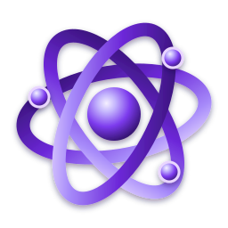

vabi.dev
Eu transformo ideias em coisas úteis.
Sou o Vinicius, desenvolvedor e estudante. Gosto de tecnologia, sou meio agitado, vivo com várias ideias na cabeça e adoro resolver problemas reais com código.
Trabalho com Inteligência Artificial na prática desde 2021 e, desde então, venho construindo projetos que fazem sentido.
Olá, eu sou o Vinicius.
Estudo, desenvolvo e gosto de resolver problemas com tecnologia: automação, Inteligência Artificial, interfaces e tudo que dê para transformar em produto de verdade.
Sou curioso e prefiro aprender fazendo. Comecei a usar IA na prática em 2021 e, de lá para cá, tem sido minha principal ferramenta de pesquisa e de desenvolvimento.
Moro no Brasil. Os projetos que mantenho estão na pasta ao lado, e quem quiser conversar pode me achar no GitHub.
| Nome | O que é | Acesso | Links |
|---|---|---|---|
| Nexumpedia | Enciclopédia com identidade própria, publicação controlada e foco em leitura agradável. | Público | Código |
| Lar Feliz Animal | Plataforma de adoção que conecta animais, adotantes e abrigos, com busca, favoritos e candidaturas. | Público, no ar | Site Código |
| Fila Zero | Reduz filas e organiza atendimentos. Hoje é mantido como edição open source. | Público | Código |
| SINEP | Sistema integrado de gestão escolar para aproximar gestão, professores, estudantes e responsáveis. | Privado | Sem link público |
| OrbisLink | Projeto experimental de comunicação local, transferência, segmentação e integração entre dispositivos. | Privado | Sem link público |
O que uso no dia a dia, do front-end à automação.
| Programa | Para que uso |
|---|---|
| HTML | Estrutura das páginas |
| CSS | Estilos e layouts responsivos |
| JavaScript | Interatividade no navegador |
| TypeScript | Aplicações que precisam crescer sem quebrar |
| Node.js | Back-end e APIs |
| Git | Controle de versão |
| IA aplicada | Modelos, integração e automação |
| Automação | Tirar tarefas repetitivas do caminho |
| UI/UX e prototipagem | Testar uma ideia antes de construir |
Quer conversar?
Estou aberto a falar de projetos, ideias, oportunidades ou só de tecnologia. O caminho mais direto é o GitHub: abra uma issue ou mande mensagem por lá.